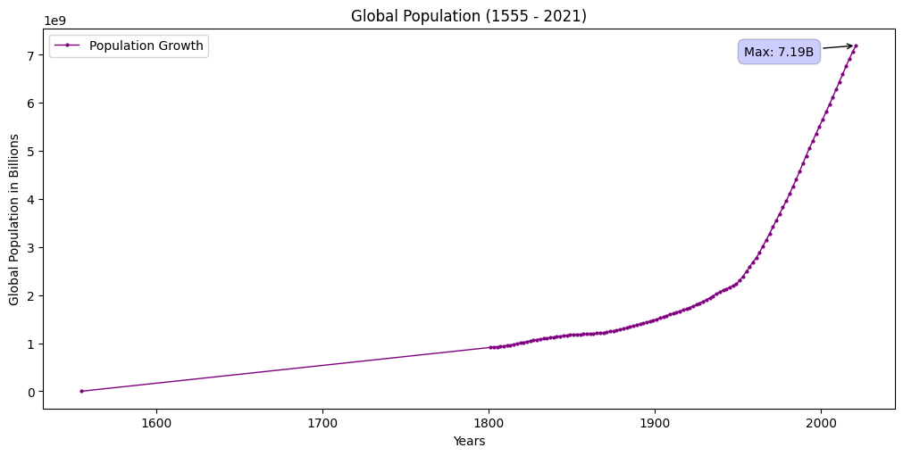

Create Simple Visualizations
📘 The examples below assume that you are using Jupyter
This section demonstrates visualization through charting. We use the standard convention for referencing the narwhals, pandas, polars, and matplotlib API's:
import narwhals as nw
import pandas as pd
import polars as pl
import matplotlib.pyplot as plt
import csv
pd_df = pd.read_csv('docs/basics/data/population.csv')
country_list = []
with open('docs/basics/data/data.csv', 'r') as file:
csv_reader = csv.reader(file)
for row in csv_reader:
country_list.append(row[0])
pl_df = pl.read_csv('docs/basics/data/population.csv')
country_list = []
with open('docs/basics/data/data.csv', 'r') as file:
csv_reader = csv.reader(file)
for row in csv_reader:
country_list.append(row[0])
We will now write a Data-Agnostic function
@nw.narwhalify
def func(df):
df = df.rename({"Population (historical estimates)": "Population"})
# filter out entities that are not countries
is_country = df.with_columns(is_country=nw.col("Entity").is_in(country_list)).filter(nw.col('is_country'))
return is_country.group_by(['Year']).agg(nw.col('Population').sum().alias('Global Population')).sort("Global Population")
Pass either a Pandas or Polars dataframe to the Narwhals agnostic function.
func(pd_df)
# Result
Year Global Population
260 1555 400
259 1788 4000
261 1640 40000
0 -10000 3827272
1 -9000 4892484
.. ... ...
254 2017 6915291988
255 2018 6991447536
256 2019 7064869525
257 2020 7133199746
258 2021 7194273282
[262 rows x 2 columns]
func(pl_df)
# Result
shape: (262, 2)
┌────────┬───────────────────┐
│ Year ┆ Global Population │
│ --- ┆ --- │
│ i64 ┆ i64 │
╞════════╪═══════════════════╡
│ 1555 ┆ 400 │
│ 1788 ┆ 4000 │
│ 1640 ┆ 40000 │
│ -10000 ┆ 3827272 │
│ -9000 ┆ 4892484 │
│ … ┆ … │
│ 2017 ┆ 6915291988 │
│ 2018 ┆ 6991447536 │
│ 2019 ┆ 7064869525 │
│ 2020 ┆ 7133199746 │
│ 2021 ┆ 7194273282 │
└────────┴───────────────────┘
We can then use matplotlib to plot a graph of the Global population trend from the year 1555 till 2021.
plt.figure(figsize=(10, 5), layout = 'constrained', )
plt.plot(pd_df['Year'], pd_df['Global Population'], label = 'Population Growth', linewidth=1, marker='o', markersize=2, color='purple')
plt.ylabel('Global Population in Billions')
plt.xlabel('Years')
plt.title('Global Population (1555 - 2021)')
plt.legend()
max_population = pd_df['Global Population'].max()
max_year = pd_df.loc[pd_df['Global Population'].idxmax(), 'Year']
unit = 1000000000
plt.annotate(f'Max: {max_population/unit:.2f}B', xy=(max_year, max_population),
xytext=(-90, -10), textcoords='offset points', ha='left', va='bottom',
bbox=dict(boxstyle='round,pad=0.5', fc='blue', alpha=0.2),
arrowprops=dict(arrowstyle='->', connectionstyle='arc3,rad=0'))
The resulting graph.
